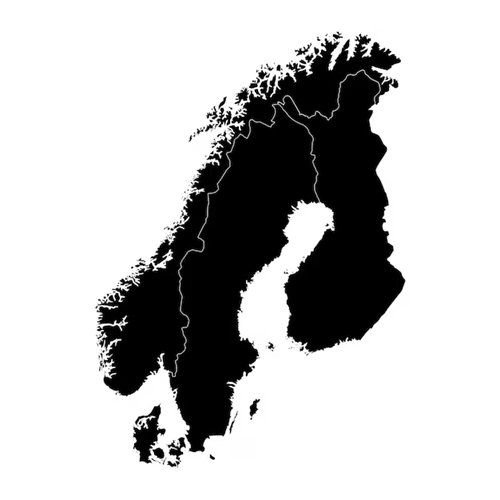

Today we’re looking at higher education in Scandinavia, specifically Denmark, Sweden, and Norway. This region is famous for the 'Nordic Model,' where education is a public right. However, access depends entirely on where you’re from. To understand the costs, let’s look at schools like the Karolinska Institute in Sweden. An European student pays zero in tuition, but an international student might pay over €20,000 a year for the same program. Both groups face a massive barrier: the cost of living. You need at least €1,000 a month for basics in cities like Oslo or Stockholm, making it a 'free' system that is still very expensive. Beyond the money, there are 'invisible' barriers. For internationals, it’s the strict visa requirement of proving you have full funds. For everyone, it’s the cultural shift because the Scandinavian classroom is a 'flat hierarchy' because students address the professors by their first names and focus on Problem-Based Learning. In conclusion, Scandinavia offers a world-class model, but it functions like a 'closed club' filtered by geography and economy. Now, I want to ask you, how does this compare to our experience at universities in Colombia?